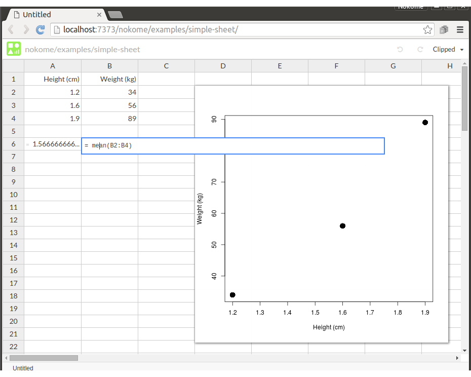
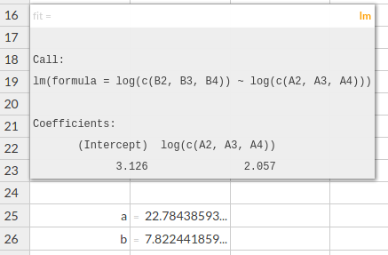
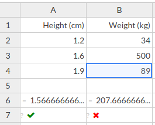
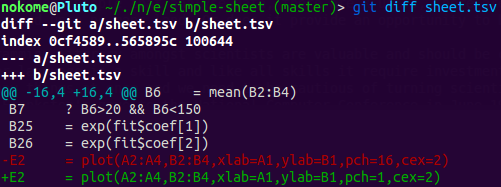
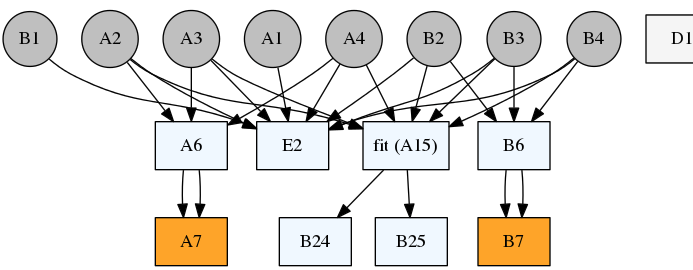

Getting under Stencila sheets
This is a follow up post to the introduction to Stencila sheets . I’m going to go into more technical details to explain how they work and some of the things you can do with them.
Getting started
Stencila sheets are designed to be used on your own computer or in the cloud (i.e. “someone else’s computer”). In this post I’m going to use a local R session to create and play around with a simple sheet. But the same sheet is published at https://stenci.la/nokome/examples/simple-sheet and you can play with it over there (a Docker container will host the R session on our servers which will open up and serve the sheet just like I’m about to do locally).
To get started, install the Stencila R package from our package repository and load it into your R session. Unfortunately, at the moment, we only have packages compiled for R 3.2 on 64-bit Linux, but we are working on binaries for operating systems:
> install.packages('stencila', repo='http://get.stenci.la/r')
> library(stencila)
Let’s create a sheet. Because I eventually want to publish the sheet, to make it available for other people to use, I will save it to disk in the Stencila storage directory, /home/nokome/.stencila on my computer, with an “address” that I want to publish it at: nokome/examples/simple-sheet.
> sheet = Sheet()
> sheet$write("/home/nokome/.stencila/nokome/examples/simple-sheet")
OK, so we have a sheet, what can we do with it? Lets launch it in the browser,
sheet$view()
What happened here is the Stencila package has started up its embedded HTTP/Websocket server and then asked the operating system’s default browser to open http://localhost:7373/nokome/examples/simple-sheet. In the browser, we have the familiar spreadsheet grid interface built using the
Substance
content editing library. That interface is connected to that embedded server by a Websocket and any changes that we make to the cells gets executed in the R session.
For this article, I’m going to keep this sheet really simple, just to make some of the following output as concise as possible. So, after a few edits, here my sheet with some data, some calculations and a plot:

Diving into context
As explained in the introductory posts, in a Stencila sheet, the cell formulas are evaluated in the host language, in this case, R, and assigned to a variable with the cell id. So, when I entered 34 into cell B2, it was equivalent to writing B2 <- 34 in the R console. We can see this in action by going back to the R session and examining the sheet’s context:
# List all the variable in the sheet's context
# (currently it's actually called the `.spread` grimace)
[1] "A1" "A2" "A3" "A4" "A6" "B1" "B2" "B3" "B4" "B6" "D2"
# What is the value of A1?
> sheet$.spread$A1
[1] "Height (cm)"
# Attach the environment to the R session to make it
# easier to examine cells
> attach(sheet$.spread)
> B2
[1] 34
> mean(c(B2,B3,B4))
[1] 48.66667
Not just for numbers
Cells don’t have to hold just fundamental types like numbers and strings. For example, in cell D2 I entered = plot(A2:A4,B2:B4,xlab=A1,ylab=B1,pch=16,cex=2) which produced the plot in the top-right. Cell formulas can be evaluated to any type of object - what gets shown is the cell is the a string representation of that object. So, for example, if I enter fit = lm(log(B2:B4)~log(A2:A4)) into A15, we get a string representation of the fitted linear model (the result of the lm function in R):

I named the cell fit, so now in the R session there are two variables representing this cell A15 and the name, or alias, fit. That allows me to conveniently extract the estimated coefficients from that model in cell B25 = exp(fit$coef[1]).
Testing, testing, 1, 2, 3
Stencila sheets allow you to define “test” cells: cells that define test assertions. Test cells are distinguished by a leading ?. For example, by setting A7 to ? A6>1 && A6<3 and B7 to ? B6>20 && B6<150 we define two tests that check that the mean height and weight are in plausible ranges. These show a cross if the test has failed:

We can also get test statistics, including the coverage of cells with formula (i.e. excluding simple data cells)
> sheet$test()
> library(rjson)
> fromJSON(sheet$test())
$cells
[1] 27
$coverage
[1] 0.3333333
$covered
[1] 2
$errors
[1] 0
$expressions
[1] 6
$fails
[1] 1
$passes
[1] 1
$tests
[1] 2
Points of view
A key aspect of Stencila sheets is that they can be interacted with in different ways, using alternative tools. If you want to, you can see the content of all cells, by writing the sheet to disk and looking at sheet.tsv - it’s the sheets “source code” file.
> sheet$write()
A1 "Height (cm)"
A2 1.2
A3 1.6
A4 1.9
A6 = mean(A2:A4)
A16 fit = lm(log(B2:B4)~log(A2:A4)) ove
A25 "a"
A26 "b"
B1 "Weight (kg)"
B2 34
B3 56
B4 89
B6 = mean(B2:B4)
B25 = exp(fit$coef[1])
B26 = exp(fit$coef[2])
E2 = plot(A2:A4,B2:B4,xlab=A1,ylab=B1,pch=16,cex=2)
So, if you don’t want to launch the browser based interface you can edit it in your favorite text editor and update the sheet from within a console. And because it’s just plain text, sheet.tsv can easily be diffed using tools like git to see what changes have been made to that source code file:

We can also export the sheet as an R script, allowing it to be run in an R console or other R user interface. This uses the sheet’s internal dependency graph to export each cell in the correct order. Obviously, this isn’t going to be very useful for large spreadsheets, particularly those that have a lot of data. But we think that there are ways that we can improve on that (see “cell mapping” below).
> sheet$export('sheet.r')
B1 <- "Weight (kg)"
A26 <- "b"
A25 <- "a"
B4 <- 89
B3 <- 56
B2 <- 34
B6 <- mean(c(B2,B3,B4))
A4 <- 1.9
A3 <- 1.6
A2 <- 1.2
fit <- lm(log(c(B2,B3,B4))~log(c(A2,A3,A4)))
B26 <- exp(fit$coef[2])
B25 <- exp(fit$coef[1])
A6 <- mean(c(A2,A3,A4))
A1 <- "Height (cm)"
E2 <- plot(c(A2,A3,A4),c(B2,B3,B4),xlab=A1,ylab=B1,pch=16,cex=2)
You can also visualize the dependencies between cells using the dependency graph (this will currently only work id you have Graphviz dot installed):
> sheet$graphviz()

And because the sheet is being served up by the embedded server from within the R session it can also be accessed via a JSON web API:
http localhost:7373/nokome/examples/simple-sheet@cell id=B26
HTTP/1.1 200 OK
Content-Length: 141
Content-Type: application/json
Server: Stencila embedded
{
"depends": [
"A16"
],
"display": "cli",
"expression": "exp(fit$coef[2])",
"id": "B26",
"kind": "exp",
"name": "",
"type": "real",
"value": "7.8224418599574"
}
Under construction
Stencila sheets are young and under a lot of development. We’re an open source project and keen to get suggestions, feedback, and contributions. Feel free to add an issue, or comment on an existing one, over at the repo on Github https://github.com/stencila/stencila . Or drop by and chat with use in our Gitter chat room